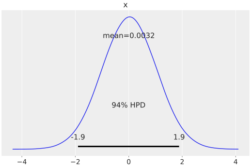
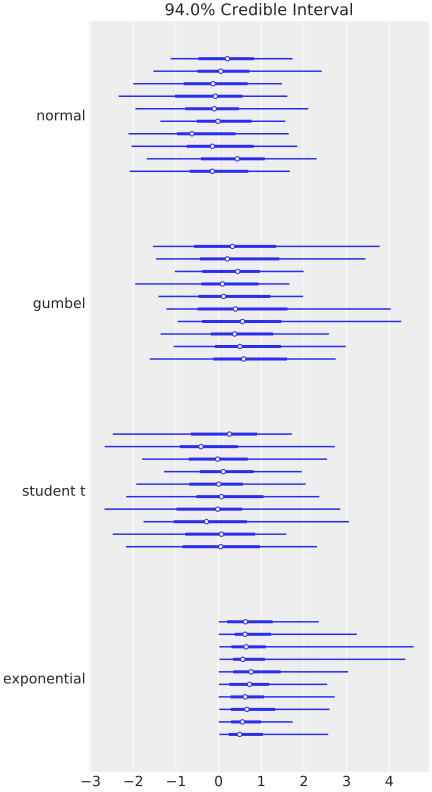
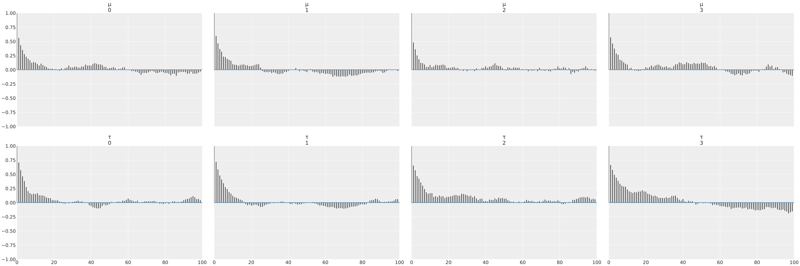
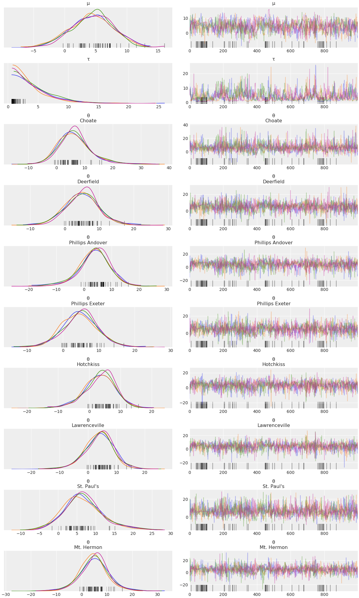
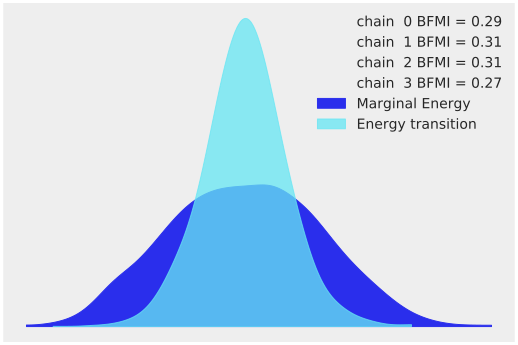
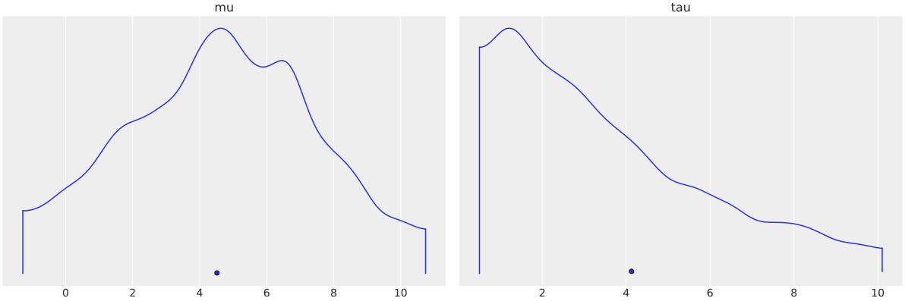
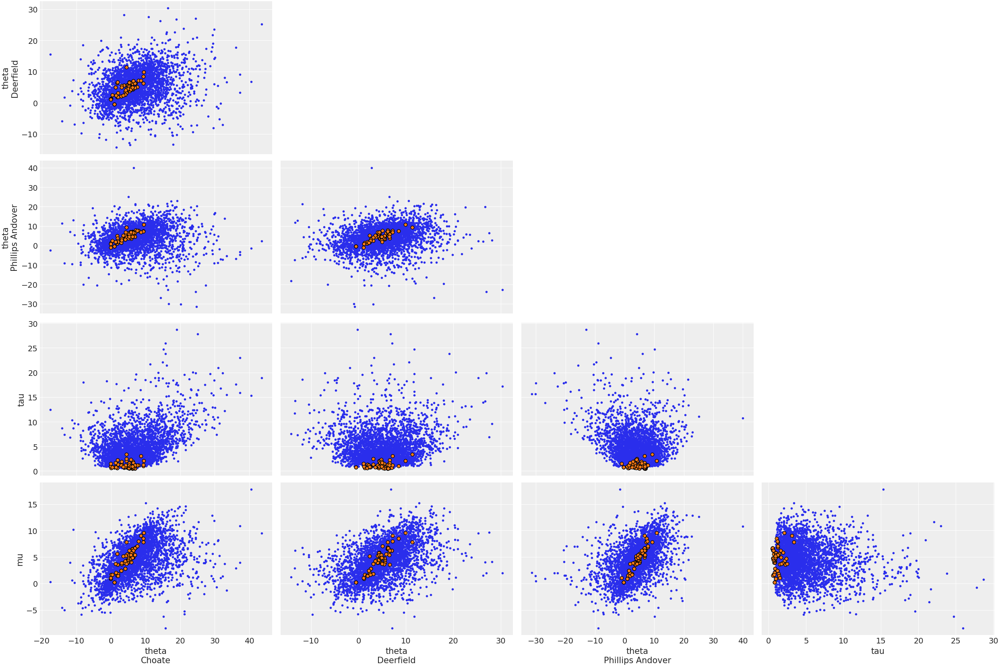
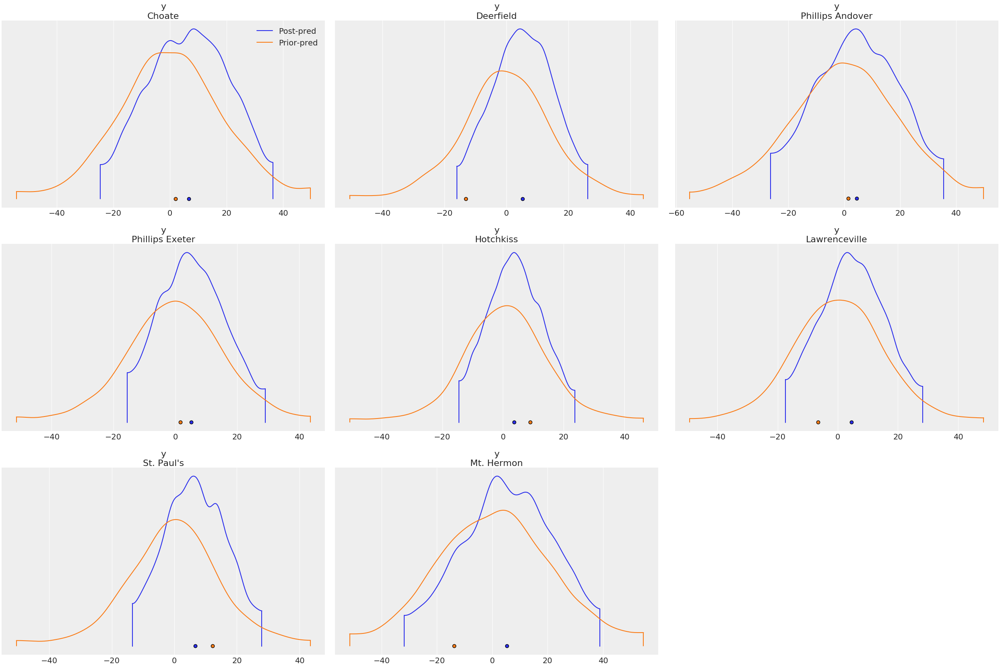

ArviZ.jl Quickstart
This quickstart is adapted from ArviZ's Quickstart.
using ArviZ
# ArviZ ships with style sheets!
ArviZ.use_style("arviz-darkgrid")Get started with plotting
ArviZ.jl is designed to be used with libraries like CmdStan, Turing.jl, and Soss.jl but works fine with raw arrays.
using Random
rng = Random.MersenneTwister(42)
plot_posterior(randn(rng, 100_000));
Plotting a dictionary of arrays, ArviZ.jl will interpret each key as the name of a different random variable. Each row of an array is treated as an independent series of draws from the variable, called a chain. Below, we have 10 chains of 50 draws each for four different distributions.
using Distributions
s = (10, 50)
plot_forest(Dict(
"normal" => randn(rng, s),
"gumbel" => rand(rng, Gumbel(), s),
"student t" => rand(rng, TDist(6), s),
"exponential" => rand(rng, Exponential(), s)
));
Plotting with MCMCChains.jl's Chains objects produced by Turing.jl
ArviZ is designed to work well with high dimensional, labelled data. Consider the eight schools model, which roughly tries to measure the effectiveness of SAT classes at eight different schools. To show off ArviZ's labelling, I give the schools the names of a different eight schools.
This model is small enough to write down, is hierarchical, and uses labelling. Additionally, a centered parameterization causes divergences (which are interesting for illustration).
First we create our data and set some sampling parameters.
J = 8
y = [28.0, 8.0, -3.0, 7.0, -1.0, 1.0, 18.0, 12.0]
σ = [15.0, 10.0, 16.0, 11.0, 9.0, 11.0, 10.0, 18.0]
schools = [
"Choate",
"Deerfield",
"Phillips Andover",
"Phillips Exeter",
"Hotchkiss",
"Lawrenceville",
"St. Paul's",
"Mt. Hermon"
];
nwarmup, nsamples, nchains = 1000, 1000, 4;Now we write and run the model using Turing:
using Turing
Turing.@model turing_model(
J,
y,
σ,
::Type{TV} = Vector{Float64},
) where {TV} = begin
μ ~ Normal(0, 5)
τ ~ truncated(Cauchy(0, 5), 0, Inf)
θ = TV(undef, J)
θ .~ Normal(μ, τ)
y ~ MvNormal(θ, σ)
end
param_mod = turing_model(J, y, σ)
sampler = NUTS(nwarmup, 0.8)
turing_chns = psample(
param_mod,
sampler,
nwarmup + nsamples,
nchains;
progress = true,
);Most ArviZ functions work fine with Chains objects from Turing:
plot_autocorr(convert_to_inference_data(turing_chns); var_names = ["μ", "τ"]);
savefig("quick_turingautocorr.svg"); nothing # hide
Convert to InferenceData
For much more powerful querying, analysis and plotting, we can use built-in ArviZ utilities to convert Chains objects to xarray datasets. Note we are also giving some information about labelling.
ArviZ is built to work with InferenceData (a netcdf datastore that loads data into xarray datasets), and the more groups it has access to, the more powerful analyses it can perform.
idata = from_mcmcchains(
turing_chns,
# prior = prior, # hide
# posterior_predictive = posterior_predictive, # hide
coords = Dict("school" => schools),
dims = Dict(
"y" => ["school"],
"σ" => ["school"],
"θ" => ["school"],
),
library = "Turing",
)Each group is an ArviZ.Dataset (a thinly wrapped xarray.Dataset). We can view a summary of the dataset.
idata.posteriorHere is a plot of the trace. Note the intelligent labels.
plot_trace(idata);
savefig("quick_turingtrace.png"); nothing # hide
We can also generate summary stats
summarystats(idata)and examine the energy distribution of the Hamiltonian sampler
plot_energy(idata);
savefig("quick_turingenergy.svg"); nothing # hide
Plotting with CmdStan.jl outputs
CmdStan.jl and StanSample.jl also default to producing Chains outputs, and we can easily plot these chains.
Here is the same centered eight schools model:
using CmdStan, MCMCChains
schools_code = """
data {
int<lower=0> J;
real y[J];
real<lower=0> sigma[J];
}
parameters {
real mu;
real<lower=0> tau;
real theta[J];
}
model {
mu ~ normal(0, 5);
tau ~ cauchy(0, 5);
theta ~ normal(mu, tau);
y ~ normal(theta, sigma);
}
generated quantities {
vector[J] log_lik;
vector[J] y_hat;
for (j in 1:J) {
log_lik[j] = normal_lpdf(y[j] | theta[j], sigma[j]);
y_hat[j] = normal_rng(theta[j], sigma[j]);
}
}
"""
schools_dat = Dict("J" => J, "y" => y, "sigma" => σ)
stan_model = Stanmodel(
model = schools_code,
name = "schools",
nchains = nchains,
num_warmup = nwarmup,
num_samples = nsamples,
output_format = :mcmcchains,
random = CmdStan.Random(8675309),
)
_, stan_chns, _ = stan(stan_model, schools_dat, summary = false);
File /home/vsts/work/1/s/docs/build/tmp/schools.stan will be updated.plot_density(convert_to_inference_data(stan_chns); var_names=["mu", "tau"]);
Again, converting to InferenceData, we can get much richer labelling and mixing of data. Note that we're using the same from_cmdstan function used by ArviZ to process cmdstan output files, but through the power of dispatch in Julia, if we pass a Chains object, it instead uses ArviZ.jl's overloads, which forward to from_mcmcchains.
idata = from_cmdstan(
stan_chns;
posterior_predictive = "y_hat",
observed_data = Dict("y" => schools_dat["y"]),
log_likelihood = "log_lik",
coords = Dict("school" => schools),
dims = Dict(
"y" => ["school"],
"sigma" => ["school"],
"theta" => ["school"],
"log_lik" => ["school"],
"y_hat" => ["school"],
),
)InferenceData with groups:
> posterior
> posterior_predictive
> sample_stats
> observed_dataHere is a plot showing where the Hamiltonian sampler had divergences:
plot_pair(
idata;
coords = Dict("school" => ["Choate", "Deerfield", "Phillips Andover"]),
divergences = true,
);
Plotting with Soss.jl outputs
With Soss, we can define our model for the posterior and easily use it to draw samples from the prior, prior predictive, posterior, and posterior predictive distributions.
First we define our model:
using Soss, NamedTupleTools
mod = Soss.@model (J, σ) begin
μ ~ Normal(0, 5)
τ ~ HalfCauchy(5)
θ ~ Normal(μ, τ) |> iid(J)
y ~ For(1:J) do j
Normal(θ[j], σ[j])
end
end
constant_data = (J = J, σ = σ)
param_mod = mod(; constant_data...)Joint Distribution
Bound arguments: [J, σ]
Variables: [τ, μ, θ, y]
@model (J, σ) begin
τ ~ HalfCauchy(5)
μ ~ Normal(0, 5)
θ ~ Normal(μ, τ) |> iid(J)
y ~ For(1:J) do j
Normal(θ[j], σ[j])
end
end
Then we draw from the prior and prior predictive distributions.
Random.seed!(5298)
prior_prior_pred = map(1:nchains*nsamples) do _
draw = rand(param_mod)
return delete(draw, keys(constant_data))
end
prior = map(draw -> delete(draw, :y), prior_prior_pred)
prior_pred = map(draw -> delete(draw, (:μ, :τ, :θ)), prior_prior_pred);Next, we draw from the posterior using DynamicHMC.jl.
post = map(1:nchains) do _
dynamicHMC(param_mod, (y = y,), nsamples)
end;Finally, we use the posterior samples to draw from the posterior predictive distribution.
pred = predictive(mod, :μ, :τ, :θ)
post_pred = map(post) do post_draws
map(post_draws) do post_draw
pred_draw = rand(pred(post_draw)(constant_data))
return delete(pred_draw, keys(constant_data))
end
end;Each Soss draw is a NamedTuple. Now we combine all of the samples to an InferenceData:
idata = from_namedtuple(
post;
posterior_predictive = post_pred,
prior = [prior],
prior_predictive = [prior_pred],
observed_data = Dict("y" => y),
constant_data = constant_data,
coords = Dict("school" => schools),
dims = Dict(
"y" => ["school"],
"σ" => ["school"],
"θ" => ["school"],
),
library = Soss,
)InferenceData with groups:
> posterior
> posterior_predictive
> prior
> prior_predictive
> observed_data
> constant_dataWe can compare the prior and posterior predictive distributions:
plot_density(
[idata.posterior_predictive, idata.prior_predictive];
data_labels = ["Post-pred", "Prior-pred"],
var_names = ["y"],
)
Environment
using Pkg
Pkg.status() Status `~/work/1/s/docs/Project.toml`
[131c737c] ArviZ v0.3.2 [`~/work/1/s`]
[593b3428] CmdStan v6.0.2
[31c24e10] Distributions v0.22.4
[e30172f5] Documenter v0.24.5
[c7f686f2] MCMCChains v3.0.0
[d9ec5142] NamedTupleTools v0.12.1
[8ce77f84] Soss v0.10.0 #master (https://github.com/cscherrer/Soss.jl.git)using InteractiveUtils
versioninfo()Julia Version 1.3.1
Commit 2d5741174c (2019-12-30 21:36 UTC)
Platform Info:
OS: Linux (x86_64-pc-linux-gnu)
CPU: Intel(R) Xeon(R) Platinum 8171M CPU @ 2.60GHz
WORD_SIZE: 64
LIBM: libopenlibm
LLVM: libLLVM-6.0.1 (ORCJIT, skylake)
Environment:
JULIA_VERSION = 1.3
JULIA_CMDSTAN_HOME = /home/vsts/work/_temp/.cmdstan//cmdstan-2.22.1/